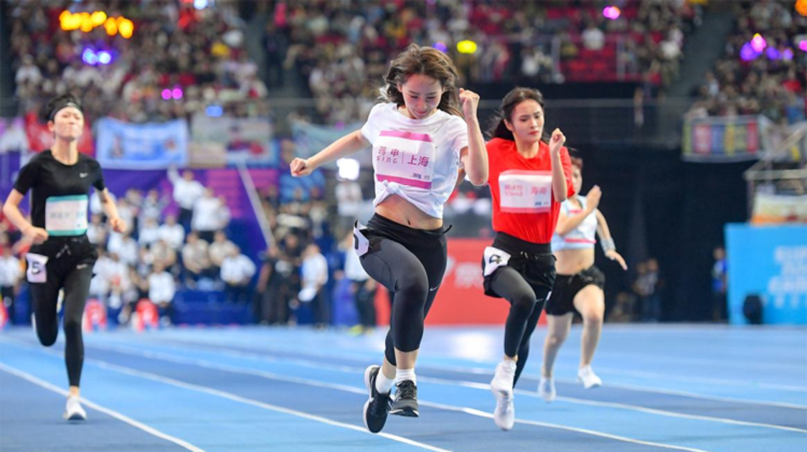

<!--
  Generated template for the MatchVotePage page.

  See http://ionicframework.com/docs/components/#navigation for more info on
  Ionic pages and navigation.
-->
<!-- <ion-header>

  <ion-navbar>
    <ion-title>matchVote</ion-title>
  </ion-navbar>

</ion-header>
 -->
<!-- 赛事-投票 -->
<ion-content>
    <div class="matchVote">
        <div class="up">
            
            <div class="arrow_write">
                
            </div>
            <div class="serch_game_icon">
                
            </div>
            <div class="more_gme">
                
            </div>
        </div>
        <div class="match_title">
            <p class="title">“绿水青山看中国”主题摄影大赛</p>
            <div class="vote_time">
                <p>投票日期：2017年7月15日-8月15日</p>
            </div>
        </div>
        <div class="me">
            <div class="left">
                
                <p>我的编号：009</p>
            </div>
            <div class="right">
                <span>当前排名</span>
                <span style="color: #257aef;">18</span>
                <span>名</span>
            </div>
        </div>
        <div class="other">
            <p class="careful">一个ID只可投一次</p>
            <div class="list">
                
                <div class="people">
                    
                    <p class="name">王者天黑黑</p>
                </div>
                <div class="vote">
                    <p class="num">499票</p>
                    <div class="but">
                        <p>投票</p>
                    </div>
                </div>
            </div>
        </div>
    </div>
</ion-content>